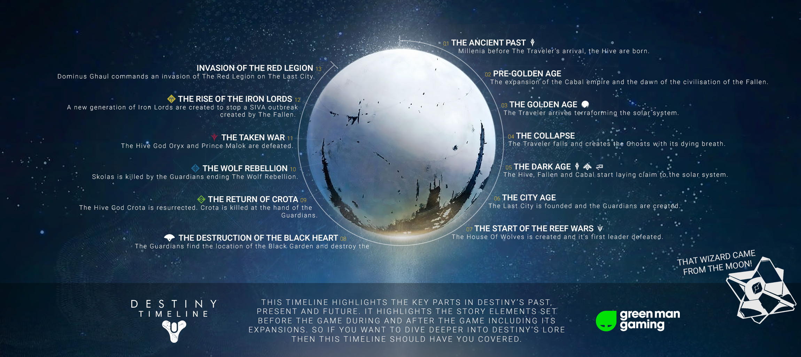

Home
News
Dropdown
Minecraft
Destiny
Just Shapes & Beats
Destiny
In this page the Traveler of Destiny is the next topic on the list
The origins or nature of the Traveler is not clear to anyone. However, some information can be gleaned from the poem known as Dreams of Alpha Lupi. Based on this work, it appears that the Traveler chose Earth and humanity for a reason; it detected a "face" emerging from the Sun, later hearing a roar that contained something that it described as "a lucid melody". The Traveler felt joy, as it felt "the first hope in ages transform it," and it resolved to become strong enough to fight the Darkness. The Traveler exists to help other worlds, but has never wished to be worshipped as a god, nor made its presence known any more than necessary to cultivate a civilization. When its work was finished, it would simply leave without fanfare. It would seem then that its defense of humanity was an extraordinary act under dire circumstances.
